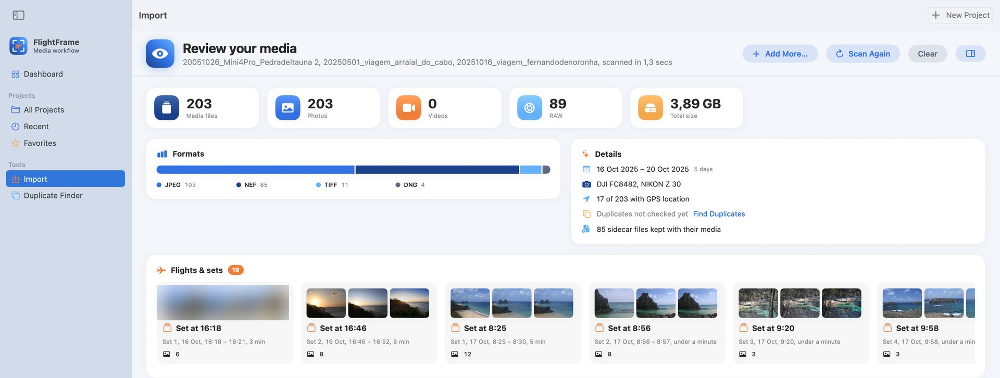

Solte o cartão e revise
Arraste o cartão SD, uma pasta ou arquivos soltos. Em segundos você vê tudo o que há nele, antes de copiar qualquer coisa.
- Voos e sets separados por horário e local
- Duplicatas encontradas antes da cópia
- Relógio do drone desajustado detectado e corrigido
